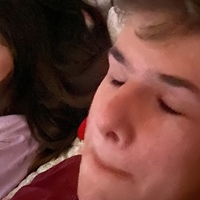

Introduction
Hi🖖 Я Нимай, и это мой вебсайт, на котором вы можете узнать обо мне.
Ну в общем дело такое: я не очень люблю рассказывать о себе. А вот писать –– совсем другое дело.
И по этой причине я решил сделать такой вебсайт. Приятного ознакомления🌸
_________________________
Биография
Я родился 4 августа 2006 года в городе Благовещенск (Кто не знает, это Амурская обл.). Ну и через 3 дня после моего рождения, по словам моих родителей, мы переехали в Белогорск (город неподалеку от Благовещенска) потому что там жили мои бабушка с дедушкой по маминой линии.
Это я с фотиком

Ну и где то в 2011 мы переехали в нащ дом в селе Васильевка, которое в 3 км от Белогорска. Ну и где то в 2012 я пошел в секцию Джиу-Джитсу.
Фотографии с атестации на пояс

В 2013 году пошел в 1 "А" класс в сельскую школу. И уже в 2014 мы переехали в Сочи. Я там ходил в 2 "В" класс в 7 школу.
Но в Сочи мы сильно болели, т.к. климат ну совсем дургой, и весной 2014 мы переехали в Анапу. Вот сдесь мы уже прожили 3 года. Я ходил в 7 школу, в 3, 4 "Д" классы, гулял с друзьями и все такое. Так же ходил на секцию Ушу.
Фото с очередных соревнований по Ушу (я первый с верху с лева)

Где-то в 2015-2016 я начал знакомиться с такими языками "программирования" как HTML и CSS. Но в 2017 нам дают землю (1 га) на дальнем востоке, и мы обратно переезжаем в тот же город. Ура.... Ну я пошел в ту же школу, подружился с моим лучшим другом Никитой, и вообще было класно. Ну как только мы туда переехали, меня сразу же отдали в туже секцию Джиу-Джитсу. Вот. В 2018 я пошел в музыкалку, и бросил Джиу-Джитсу. Где то в 2020 году, Некита отдал мне свой старый комп, и тогда у меня появился первый компьютер и я опять начал программировать, но уже на Python. Ну и в игры играть, конечно же. В 2021 я заработал свои первые деньги, и на них купил MacBook Pro 2011 года. Потом в весной 2021 я купил себе apple watch series 3
Особо интересного я щас ничего вспомнить немогу, поэтому сразу к самому интересному: весной 2021 году мы ОПЯТЬ переезжаем. На этот раз в Краснодар.
Я и по сей день живу сдесь.
Особо интенсивно начал изучать Python и немного другие языки программирования. Пошел в 9 класс, сдал ОГЭ: матеша - 3, русский - 5, география - 5, информатика - 4.

Русский я сдал на 5 по чистой случайности. Я в нем ничего не понимаю. Реально.
Пошел в 10 класс, и начал писать этот сайт.
Ну, вобщем и целом вроде все ключивые мометники упомянул.
_________________________
Мои hobies🎭
Итак, чем же я увлекаюсь?
Это если вкратце. Если углубиться, то...
Программирование
Впервые познакомился с програмированием в 2016 году. Мне было 10 лет. Я увидел, как мой папа создавал сайт, мне стало интересно, и папа мне посоветовал платформу KhanAcademy. Так я познакомился с HTML и CSS. Вот мой профиль на KhanAcademy.
Затем, я что-то забросил это дело. И только в 2019 я опять начал что-то и как-то в этой области интересоваться. И тут я познакомился с Python`ом. Я начал с ним знакомиться, писать простенькие программы и все такое. Сейчас я так же пишу на python, но я так же начал немного знакомиться с Java и JavaSrcipt.
Сейчас я учавствую в NFT проекте, и помогаю в настройке minecraft сервера.
Музыка
Сколько я себя помню, у нас всегда была гитара. Это была мамина гитара. Я на ней начал играть в 8 лет. Но перед этим, папа купил в Сочи синтезатор cassio.
Так как папа у меня ходил в муз.коледж, то он что-то там понимал в этом. И начал меня учить. Но я не особо хотел учиться. Мне на велике с друзьями на море было интересней сгонять.
Но в 2018 году мне опять стала интересна эта тема, и мы достали из коробки этот ситезатор. Ну и я начал там что-то пытаться тыкать по этим черно-белым клавишам. Синтезатор крутой, поэтому на нем был LED-экранчик, на котором была видна вся клавиатура и было видно, когда и какую клавишу ты нажимаешь. И, повторюсь, так как синтезатор крутой, то на него были закачаны произведения, ноты которых отображалисть на этом самом LED-экранчике. Ну и я по этому экранчику выучил лунную сонату Бетховена.
После этого папа отдал меня в музыкалку. В 13 лет. Со мной в группе были дели 6-11 лет. ЛаДнО. Ну меня быстро перевели в 5 класс и я начал учиться экстерном. Ну было тяжко, скажу я вам. Но я справлялся. И, как говорила моя учительница по фортепиано Анна Дмитриевна, у меня был талант, который надо было развивать. Ну я там выступал на концертах, что мне не очень нравилось, поэтому я быстро перестал выступать на публике.
Затем мы преехали в Краснодар, и я не смог продолжить обучение в нем. И все из за того, что в муз. школе, в которую я поступил, произошол срез учеников из-за того, что какой-то учитель уволился. И я попал под срез. Я до сих пор играю те произведения, которые я учил или выучил в муз. школе в Белогорске.
Ну а что косаеться предпочтений в музыке, то можете посмотреть мой плейлист в Spotify.
Если в кратце, то
Медецина
Я увлекаюсь медециной оооооочень поверхностно. Мне интересна анатомия человека, но я точно не знаю сколько костей в скелете человека (233 вроде у взрослого). Ну и в остальных оспектах медецины у меня так же.
На свой 16 день рождения я попросил у родителей хирургический набор:
Научился накладывать обвивной шов.
MINECRAFT❤️
МАЙНКРАФТ ЭТО МОЯ ЖИЗНЬ!!!
Это мой котик Чебурек
Ну а если серьезно, то я не играю ни в какие игры (на данный момент), кроме майнрафта. Потому что он лучший.
Чебурек спит на мне😍
Но, сейчас у меня месячная передышка от майнрафта. Потому что я где-то прочитал, что если долго играть в одну игру, то она может очень сильно надоесть, и поэтому иногда стоит "забывать" про нее. Я так и делаю (если честно, то он мне пока что надоел, но пройдет 1-2 месяца, и мне он опять станет интересен)
_________________________
Остальное
Сдесь я решил написать о том, что не попало в другие пункты.
И так, хочу сообщить, что я вегетарианец. Еще хочу сказать что я левша, но сейчас учусь писать правой (ну чисто по приколу). Люблю сидеть дома, слушать музыку и играть в майнкрафт
Это я на истории
О, чуть не забыл: у меня же ютуб канал есть! Ну я его правда сейчас не веду, но когда-то в 2020 году было дело.
Спасибо за внимание, пишите мне в телегу.